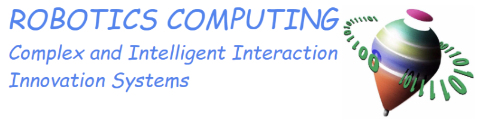
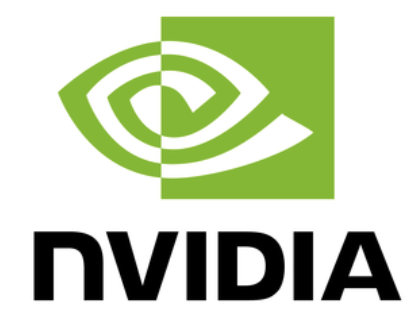

Back Propagation - 02 - ESP · La lámpara que aprende 💡
Aprende gracias a las redes neuronales con back propagation
De un interruptor a XOR: aprende Backpropagation entrenando una red neuronal de verdad, con botones ON/OFF.
Prof. L. A. Muñoz · Demostración educativa interactiva · Sin bibliotecas ni conexión a internet
1. Experimenta: cambia los interruptores
Los botones determinan la entrada. La lámpara grande muestra lo que predice la red, no la respuesta correcta.
2. Mira la IDA y la VUELTA del aprendizaje
BACK = el error regresa desde la salida. PROPAGATION = la señal de error se transmite capa por capa para calcular cómo corregir cada peso. Pulsa los tres botones y sigue las flechas.
Pulsa «Animar» para ver señales azules de ida, gradientes naranjas de vuelta y cómo cambian los pesos.
El viaje del aprendizaje: ida y vuelta
3. ¿Está aprendiendo las cuatro situaciones?
Haz clic en una fila para activar esos interruptores. Observa cómo las probabilidades se acercan a 0 o 1.
| A | B | Debe dar | Red predice | Probabilidad de ON |
|---|
4. La evidencia: disminuye el error
Pérdida media de entropía cruzada binaria sobre todos los ejemplos. El entrenamiento usa descenso de gradiente por Backpropagation.
Importante: El primer ejercicio utiliza una neurona sigmoide; el segundo también puede resolverse con una neurona; el tercero emplea una red 2–4–1 con activación tanh en la capa oculta. Los valores son cálculos reales de JavaScript. Una red con una sola neurona sigmoide no puede representar XOR exactamente. La convergencia depende de inicialización, tasa de aprendizaje y número de épocas.